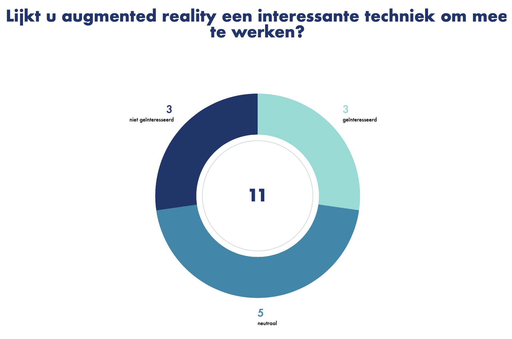
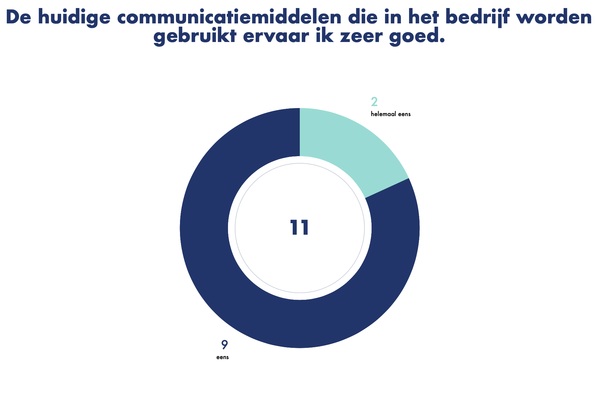
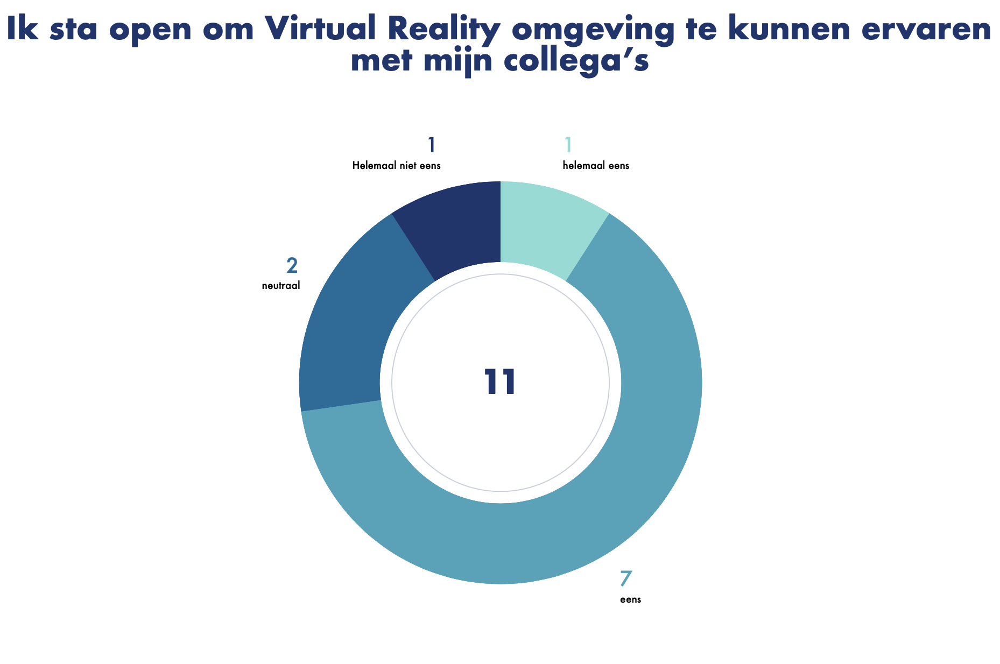

Om onderzoek te doen naar de doelgroep hebben we met onze projectgroep een survey samengesteld waarin iedereen zijn/haar eigen vragen heeft kunnen opstellen. Mijn vragen hierin gaan over de onderzochte trends uit mijn trend research. Mijn specifieke vragen die in deze survey worden gesteld zijn terug te vinden in het trend research document.
Inzichten krijgen over onze doelgroep en wat zij al weten over de onderzochte trends en wat hun mening hierover is.

Uit de survey resultaten blijkt dat de werknemers van Simac niet zo zeer op de hoogte zijn van AR, dit is voor veel nog onbekend. Sommige werknemers hebben er wel van gehoord maar uit de resultaten blijkt dat er weinig interesse is naar AR, werknemers zien dit meer als vrije tijd invulling maar niet geschikt voor werkuren.

Uit de survey resultaten is gebleken dat de werknemers van Simac geen problemen ervaren met de huidige communicatie tools. Zij ervaren dit niet als chaotisch en zijn dus ook niet opzoek naar een platform voor het integreren van hun communicatietools.

Uit de survey blijkt dat veel medewerkers van Simac bekend zijn of wel eens gehoord hebben van VR. Er is veel interesse naar, maar de werknemers zien het meer als een vrijetijdsbesteding en zien niet zo goed hoe het een oplossing kan zijn voor problemen op het gebied van thuiswerken en welzijn.
Uit de survey is gebleken dat werknemenrs van Simac geen interesse hebben in het intergreren van communicatie tools binnen Simac. Dit komt doordat de werkenemrs erg blij zijn met de communicatie tools waar ze nu gebruik van maken en ervaren dit niet als chaotisch. Verder is er ook weinig interesse naar AR aangezien de doelgroep deze technologie niet relevant vind voor op de werkvloer en ziet dit meer als vrijetijdsbesteding. De doelgroep vind VR wel een interessante technologie en staan open voor oplossingen met behulp van VR.
De doelgroep heeft geen interesse in het intergreren van hun communcatie tools of het gebruik van AR. Er is wel interesse in het gebruik maken van VR.
Survey
Survey Vragen Document